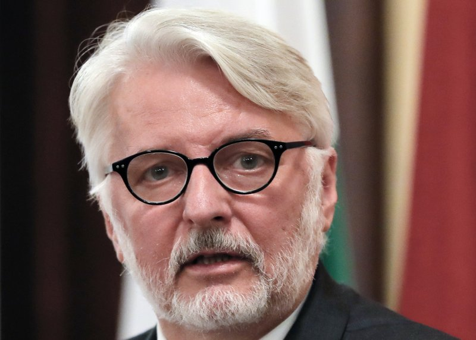

Polish FM sparks jokes with mention of nonexistent country
The Polish foreign minister has been mocked on Twitter for saying he had a meeting with the representative of a nonexistent country as part of Poland's bid for a seat on the U.N. Security Council.
Witold Waszczykowski was in New York this week to lobby for a seat on the council from 2018-19. He told reporters while there on Tuesday that he had meetings with officials from nearly 20 countries, including some Caribbean nations "for the first time in the history of our diplomacy. For example with countries such as Belize or San Escobar."
There is no country called San Escobar. Waszczykowski explained Wednesday that it was just a slip of the tongue made while he was tired and that he had had in mind Saint Kitts and Nevis, a two-island Caribbean country known in Spanish as San Cristobal y Nieves.
"Unfortunately after 22 hours in planes and several connecting flights you can make a slip of the tongue," Waszczykowski said.
That hasn't stopped an eruption of jokes under the hashtag #SanEscobar, including an invented flag and a slew of fake news about the fictional place. One tweet said that San Escobar "fully supports Poland's candidacy to the Security Council."